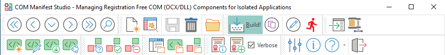

Toolbars

Top Toolbar
Find Buttons
Use the Find buttons (First, Prev, Next, Last) to find a previously saved connection record.
New Project
Click to create a new manifest project. The wizard will help you to select an existing manifest file or to create a new one if none exists. It also helps you selecting fragment files for each of your .ocx/.dll files (COM components).
Clear, Save, Delete buttons
To clear all current data, to save changes and to delete a project.
Browse
Browse for an application manifest file. It should have the same name as the application with an added '.manifest' at the end. It is an XML file with information about how to run the executable for the operating system.
Build!
Builds the application manifest file. Checks for duplicate TypeLibs and merges the selected fragment files with the application's manifest file.
Copy COM
Check/Copies COM (.ocx/.dll) components to the application folder.
Edit
Edit the application manifest file. A manifest file has the same name as the executable file, with an added '.manifest' keyword.
Run
Test runs the executable to check that the application manifest file is correct.
Embed
Embeds the manifest file in the application (.exe) file. When the manifest has been embedded in the program, the .manifest file doesn't need to be deployed to customers.
Compress
Compress the application (.exe) file. It often reduces the file size by about 80%. There's no garantee that your program will work if you try this, but in some rare cases it is quite usefull. Be carefull though, because this is the last think you want to do with a compiled program; after you have embedded the .manifest file. If you are digitally signing your program that needs to be done last.
Bottom Toolbar
Create
Create a new manifest fragment file. If you cannot find a manifest fragment file for your COM (OCX/DLL) component - in either your local repository, or via the 'Download New Fragment Files' button - you can create one here.
Edit
Opens the fragment file under the grid cursor in the editor
Download
Download New Fragment Files. Checks if there are any new 'Manifest Fragment Library' files available in the global repository at VDF-Guidance. If there is - you will be presented with a dialog where you can select files to download.
Share
Share Fragment Files. If you have created a new Manifest Fragment File for a COM (OCX/DLL) component and version - you are encouraged to share it with other users of this tool. You do so by e-mailing it/them to the author of this program, who will check it for consistency and make it available for the global repository at VDF-Guidance.
Check
Check if the COM (OCX/DLL) Component pointed to in the grid is registered with Windows
Register
Register the COM (OCX/DLL) Component corresponding to the active manifest fragment file in the grid
UnRegister
Unregister the COM (OCX/DLL) Component corresponding to the manifest fragment file under the cursor in the grid
Open Folder
Opens the application manifest file's folder in Windows explorer
Open Fragments Folder
Open the local Manifest Fragment Library in Windows Explorer. Note that there is also a global repository of fragment files available. You can press the 'Download New Fragment Files' button to get new files from the VDF-Guidance web-site.
Open COM Folder
Open the folder containing COM (OCX/DLL) modules. It is used by the program when COM (OCX/DLL) components should be copied to an application folder. In case the program can't find a component here it will look in Windows registry.
Check if signed
Checks if the program file has been signed with a digital certificate
Digitally Sign
Sign the file with a digital certificate. The best digital certificate available on the machine will be automatically selected, if not changed from the program setup dialog. Note: You must have purchased a digital certicate aimed at signing programs code and it needs to installed on the current computer.
Verbose checkbox
Controls the amount of info displayed for a digital certificate action
Configure
Configure the Program. Change settings for the program
About
Shows info about the program
Help
This is a drop-down button that has three choices. One for launching the local help file, another for launching the online HTML help at rdctools.com. Finally there's an option to check if there are any updates for the program.
Exit
Ends the program.